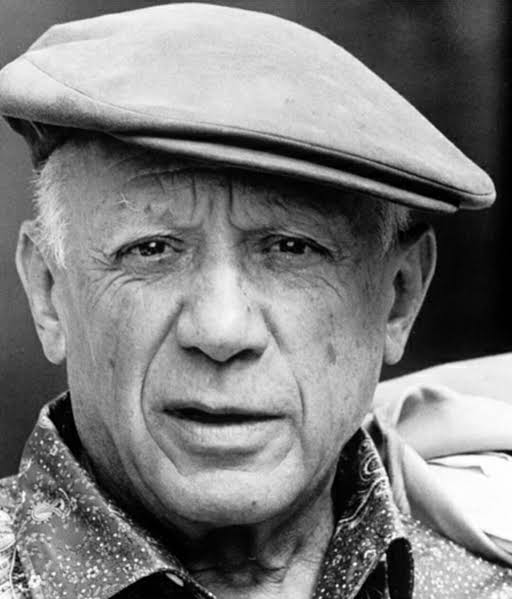
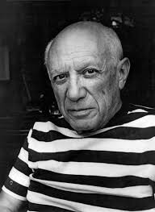
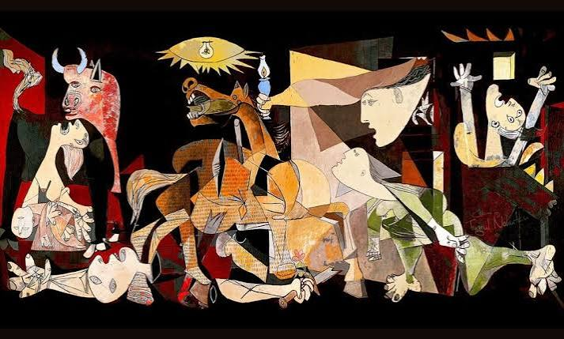
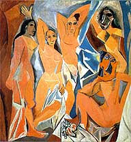
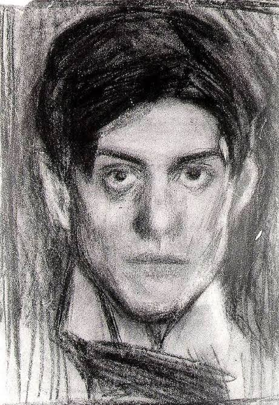

Modern sanatın sınırlarını yıkan, kübizmin öncüsü ve 20. yüzyılın en etkili sanatçısı.
Keşfetmeye BaşlaPablo Picasso, İspanya'nın Malaga şehrinde doğmuş ve çocukluğundan itibaren olağanüstü bir yetenek sergilemiş, sanat tarihinin akışını değiştiren en etkili figürlerden biridir. Geleneksel sanatsal eğitimini çok genç yaşta tamamlamış ve klasik gerçekçiliğin ötesine geçerek, nesneleri parçalara ayırıp onları farklı açılardan aynı anda göstermeyi amaçlayan, perspektif kavramını tamamen yıkan Kübizm akımını kurarak modern sanatın temellerini atmıştır. Onun sanatı, sadece bir görme biçimi değil, aynı zamanda dünyanın karmaşıklığını ve insan psikolojisinin derinliklerini geometrik formlarla yeniden yorumlama çabasıdır.

Sadece resim sanatıyla yetinmeyen Picasso, heykel, seramik ve grafik sanatları alanında da devrim niteliğinde çalışmalar yapmış, sanatın sadece gözle görülen fiziksel gerçekliği değil, zihinle kavranan soyut kavramları ve duygusal yoğunluğu yansıtması gerektiğini savunmuştur. Hayatı boyunca sürekli kendini yenileme arzusuyla yanıp tutuşmuş, her döneminde farklı bir arayışa girmiş ve sanatın sınırlarını zorlayarak geleceğin sanat anlayışına yön vermiştir. Onun bıraktığı miras, bugün hala modern sanatın merkezinde yer almakta ve sanatçılara özgürce ifade etme gücü vermeye devam etmektedir.

1901-1904 yılları arasını kapsayan bu dönem, Picasso'nun hayatındaki derin hüzün ve melankolinin sanata yansımasıdır. Yakın bir arkadaşının intiharı sonrası başlayan bu süreçte, tablolarında baskın olarak mavi tonlar kullanmış; yoksulluk, yalnızlık ve dışlanmışlık temalarını işlemiştir. Bu dönem eserleri, izleyiciye derin bir keder hissi verirken, aynı zamanda insan ruhunun kırılganlığını sanatsal bir dille anlatır.
1904-1906 yılları arasında şekillenen bu dönem, Mavi Dönem'in karanlığından sıyrılıp daha sıcak ve yumuşak tonlara geçişi temsil eder. Picasso'nun Paris'e yerleşmesi ve hayatındaki iyileşmelerle birlikte, eserlerinde sirk sanatçıları, akrobatlar ve palyaçolar ön plana çıkmaya başlamıştır. Pembe ve toprak tonlarının hakim olduğu bu süreç, sanatçının insan doğasına daha şefkatli ve meraklı bir gözle baktığı, daha huzurlu bir dönemi simgeler.
1907'den itibaren sanat tarihini kökten değiştiren Kübizm, Picasso'nun nesneleri tek bir bakış açısından değil, parçalara ayırıp farklı açılardan aynı anda gösterme tekniğidir. Formları geometrik şekillere bölen bu yaklaşım, geleneksel perspektif kurallarını tamamen yıkarak gerçekliği yeniden tanımlamıştır. Analitik ve Sentetik Kübizm olarak ikiye ayrılan bu süreç, modern sanatın kapılarını açmış ve soyutlamanın öncüsü olmuştur.

Sanat tarihinin en güçlü politik eserlerinden biri olan Guernica, İspanyol İç Savaşı sırasında meydana gelen trajediyi ve savaşın dehşetini anlatır. Dev boyutlardaki bu siyah-beyaz tablo, parçalanmış insan ve hayvan figürleriyle acıyı, kaosu ve çaresizliği simgeler. Picasso'nun kübist tarzıyla harmanladığı bu eser, savaş karşıtı bir manifesto niteliğindedir. Eser, sadece görsel bir şölen değil, aynı zamanda insanlığa karşı işlenen suçların kalıcı bir belgesidir.

Modern sanatın başlangıç noktası kabul edilen bu eser, Picasso'nun geleneksel güzellik anlayışını yıktığı çalışmadır. Figürlerin geometrik formlarla sadeleştirildiği ve maske benzeri yüzlerin kullanıldığı bu tablo, Kübizm akımının öncüsü olmuştur. Perspektifin yok sayıldığı bu kompozisyon, sanat dünyasında büyük bir şok yaratmış ve yeni bir dönemi başlatmıştır. Bu çalışma, sanatçının gerçekliği yeniden inşa etme arzusunun en çarpıcı örneğidir.

Picasso'nun kendisini farklı dönemlerde resmettiği portreleri, onun sanatsal evriminin bir aynasıdır. Kendi iç dünyasını, melankolisini ve gücünü yansıttığı bu eserlerde, yüz hatlarını deforme ederek duygusal durumlarını ön plana çıkarmıştır. Bu portreler, sanatçının kendisini bir deney alanı olarak kullandığının ve sürekli değişim arzusunun en net kanıtlarıdır. Her fırça darbesi, Picasso'nun kendi kimliği üzerindeki derin araştırmalarını ve sanatsal dürüstlüğünü temsil eder.